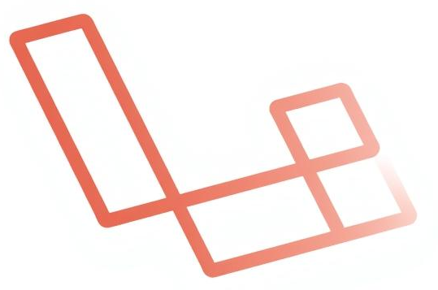

Validaciones, Rutas Resource y Mensajes del Sistema¶
1. Validación de Datos¶
1.1. ¿Qué es la validación y por qué es necesaria?¶

La validación es el proceso mediante el cual se verifica que los datos enviados por el usuario cumplen con unas reglas antes de ser almacenados en la base de datos.
Laravel ofrece un sistema de validación muy robusto, que nos permite validar datos tanto desde el controlador como mediante clases personalizadas.
Importante
Siempre debemos validar los datos antes de almacenarlos y antes de actualizarlos. Nunca debemos asumir que lo que llega del formulario es seguro o correcto.
1.2. Validar desde el controlador usando $request->validate()¶
En este caso vamos a utilizar un checkbox para marcar si la nota está completada o no. En el formulario, si el checkbox está marcado, se enviará done=on, y si no está marcado, no se enviará nada. Para evitar problemas con el on vamos a modificar la vista de creación y edición de notas para que el valor enviado sea 1 o nada en el caso de no estar marcado.
Checkbox en los formularios crear y editar
En los fichero create.blade.php y edit.blade.php:
<input type="checkbox" name="done" value="1">
Este método permite validar directamente dentro del método del controlador:
Función store()
public function store(Request $request) {
$validated = $request->validate([
'title' => 'required|string|max:255',
'description' => 'required|string|min:10',
'date_at' => 'required|date',
'done' => 'nullable|boolean'
]);
Note::create($validated);
return redirect()->route('note.index')->with('success', 'Nota creada correctamente.');
}
Cuando la validación falla, Laravel redirige automáticamente al formulario anterior. Una buena técnica es utilizar el método old() para recuperar el valor anterior del campos de manera que el usuario no tenga que volver a escribirlo.
<input name="title" value="{{ old('title') }}">
Haremos esto en todos los campos. Cuidado con los textarea que no tienen value y con los checkbox. Por ejemlo, para el checkbox:
<input type="checkbox" name="done" value="1" {{ old('done') ? 'checked' : '' }}>
Esto mostrará el checkbox marcado si el valor anterior era 1.
1.3. Reglas comunes de validación:¶
| Regla | Descripción |
|---|---|
required |
El campo es obligatorio |
string |
Debe ser una cadena de texto |
min:n |
Longitud mínima de caracteres |
max:n |
Longitud máxima de caracteres |
date_at |
Debe ser una fecha válida |
boolean |
true/false, 0/1, "yes"/"no" |
nullable |
El campo puede estar vacío |
1.4. Crear una clase FormRequest personalizada¶
Comando
php artisan make:request NoteRequest
Esto creará una clase en app/Http/Requests/NoteRequest.php
Método authorize()
Este método define si el usuario tiene permiso para hacer esta petición. Para este curso lo dejaremos en true:
Importante
Si este método devuelve false, la validación no se ejecutará y se lanzará un error 403 (Forbidden).
Autorizar la petición
public function authorize() {
return true;
}
Método rules()
Ahora vamos a definir unas reglas de validación de ejemplo para nuestro ejemplo de notas:
Ejemplo de reglas
public function rules() {
return [
'title' => 'required|string|max:255',
'description' => 'required|string|min:10',
'date_at' => 'required|date',
'done' => 'nullable|boolean'
];
}
Uso en el controlador:
En el controlador, en lugar de usar Request $request, usaremos NoteRequest $request. Laravel se encargará de validar automáticamente los datos antes de ejecutar el método.
Almacenar una nota
public function store(NoteRequest $request) {
$data = $request->all();
$data['done'] = $request->has('done') ? 1 : 0; // Convertir checkbox a booleano
Note::create($data);
return redirect()->route('note.index');
}
Antes de modificar el update() recordar que en la vista de edición el checkbox se envía como done=on o no se envía nada. Hacemos en esta vista lo mismo que en la de creación:
<input type="checkbox" name="done" value="1" {{ ($note->done) ? 'checked' : '' }}>
Hacemos lo mismo para el método update():
Actualizar una nota
public function update(NoteRequest $request, Note $note) {
$note->update($request->all());
return redirect()->route('note.index');
}
2. Mostrar Errores de Validación¶
2.1. Mostrar errores en el formulario¶
Para el usuario es importante recibir feedback inmediato sobre los errores en el formulario. Laravel facilita esto con la variable $errors disponible en las vistas.
Mostrar un error específico junto a cada campo
<input name="title" value="{{ old('title') }}">
@error('title')
<small style="color:red">{{ $message }}</small>
@enderror
2.2. Resaltar campos con error (CSS)¶
También puedes añadir una clase CSS al campo si tiene error, para destacarlo visualmente según diseño de la aplicación:
Resaltar campos con CSS
<input name="title" class="@error('title') is-invalid @enderror">
Y luego en CSS puedes estilizar la clase .is-invalid.
2.3. Mostrar todos los errores juntos¶
Mostrar errores en la parte superior del formulario
@if ($errors->any())
<div class="alert alert-danger">
<ul>
@foreach ($errors->all() as $error)
<li>{{ $error }}</li>
@endforeach
</ul>
</div>
@endif
2.4. Modificar la vista de creación y vista de edición¶
Vista de creación create.blade.php
@extends('layouts.app')
@section('title', 'Crear nueva Nota')
@section('content')
<h2>Editar Nota</h2>
<form action="{{ route('note.store') }}" method="POST">
@csrf
<label>Título:</label>
<input type="text" name="title" value="{{ old('title') }}" required>
@error('title')
<small style="color:red">{{ $message }}</small>
@enderror
<label>Descripción:</label>
<textarea name="description" required>{{ old('description') }}</textarea>
@error('description')
<small style="color:red">{{ $message }}</small>
@enderror
<label>Fecha:</label>
<input type="date" name="date_at" value="{{ old('date_at') }}" required>
@error('date_at')
<small style="color:red">{{ $message }}</small>
@enderror
<label>Completada:</label>
<input type="checkbox" name="done" {{ old('done') ? 'checked' : '' }}>
@error('done')
<small style="color:red">{{ $message }}</small>
@enderror
<button type="submit">Guardar</button>
<a href="{{ route('note.index') }}">Cancelar</a>
</form>
@endsection
Vista de edición edit.blade.php
@extends('layouts.app')
@section('title', 'Editar Nota')
@section('content')
<h2>Editar Nota</h2>
<form action="{{ route('note.update', $note->id) }}" method="POST">
@csrf
@method('PUT')
<label>Título:</label>
<input type="text" name="title" value="{{ $note->title }}" required>
@error('title')
<small style="color:red">{{ $message }}</small>
@enderror
<label>Descripción:</label>
<textarea name="description" required>{{ $note->description }}</textarea>
@error('description')
<small style="color:red">{{ $message }}</small>
@enderror
<label>Fecha:</label>
<input type="date" name="date_at" value="{{ $note->date_at }}" required>
@error('date_at')
<small style="color:red">{{ $message }}</small>
@enderror
<label>Completada:</label>
<input type="checkbox" name="done" {{ $note->done ? 'checked' : '' }}>
@error('done')
<small style="color:red">{{ $message }}</small>
@enderror
<button type="submit">Actualizar</button>
<a href="{{ route('note.index') }}">Cancelar</a>
</form>
@endsection
Algunos métodos interesantes de laravel que no hemos utilizado pero que se usan a menudo son:
| Clase | Método | Descripción |
|---|---|---|
Illuminate\Support\Facades\Validator |
make() |
Crear un validador |
Illuminate\Support\Facades\Validator |
fails() |
Verificar si la validación falló |
Illuminate\Support\Facades\Validator |
errors() |
Obtener los errores de validación |
Illuminate\Support\Facades\Validator |
validate() |
Validar y redirigir automáticamente |
Illuminate\Support\Facades\Request |
old() |
Obtener el valor anterior de un campo |
Illuminate\Support\Facades\Request |
flash() |
Guardar datos en la sesión para la siguiente petición |
Ahora vamos a probar a crear una nota con una descripción inferir a los 10 caracteres y veremos el mensaje de error.

Ahora corregimos el error y vemos que la nota se crea correctamente. Además nos aparece un mensaje de éxito.

Ahora podéis comprobar que:
- En la edición las validaciones y mensajes de éxito funcionan igual.
- El campo ´done´ funciona correctamente tanto en creación como en edición.
campo done
Si has seguido al pie de la letra las instrucciones, el campo done no va a funcionar. Al añadir la clase NoteRequest pedimos que el campo sea boolean pero a este punto está llegando un on cuando el checkbox está marcado, o nada cuando no lo está. Y por tanto no llegaremos nunca a que se ejecute el método store() o update(), que es donde estábamos manejando el valor del checkbox.
Solución
Necesitaos que cuando se valida el campo done, si está marcado llegue como true y si no está marcado como false. Ya que en la validación hemos especificado que debe ser un booleano. Para ello vamos a usar el método prepareForValidation() que nos permite modificar los datos antes de que se apliquen las reglas de validación.
Modificar datos antes de validar
Añadimos este método en la clase NoteRequest
protected function prepareForValidation() {
$this->merge([
'done' => $this->done ? true : false,
]);
}
De esta manera nos aseguramos que el campo done siempre llega como 1 o 0, y por tanto la validación funciona correctamente. Con esto ahora el campo done funciona correctamente.
prepareForValidation()
Este método es muy útil para modificar cualquier dato antes de que se aplique la validación. Por ejemplo, podríamos usarlo para formatear fechas, convertir cadenas a mayúsculas/minúsculas. No siempre la información que llega del formulario está en el formato que necesitamos para validar o almacenar. Y que no esté en el formato no significa que no sea válido. Pero la validación de laravel es estricta y debemos asegurarnos que los datos cumplen las reglas que hemos definido.
2.5. Traducir los mensajes de error¶
Laravel trae sus mensajes de error por defecto en inglés.
- Archivo por defecto:
resources/lang/en/validation.php - Puedes crear una versión en español copiando el contenido en:
resources/lang/es/validation.php - Activa el idioma por defecto en
config/app.php:
'locale' => 'es',
3. Mensajes de Éxito¶
Para mejorar la experiencia del usuario, es buena práctica mostrar mensajes de éxito o error después de operaciones como crear, actualizar o eliminar. PPara ello vamos a usar los mensajes flash, que permiten mandar un mensaje entre peticiones almacenándolo en la sesión.
3.1. Flash de sesión con with()¶
Este método permite guardar un mensaje en la sesión que se mostrará en la siguiente petición. Vamos a usarlo para mostrar un mensaje de éxito después de crear o actualizar o eliminar una nota.
En la función store() del controlador:
return redirect()->route('note.index')->with('success', 'Nota guardada correctamente.');
En la función update():
return redirect()->route('note.index')->with('success', 'Nota actualizada correctamente.');
En la función destroy():
return redirect()->route('note.index')->with('danger', 'Nota eliminada correctamente.');
3.2. Mostrar el mensaje en la vista (por ejemplo, en layout):¶
Mostrar mensaje de éxito
@if (session('success'))
<div class="alert alert-success">
{{ session('success') }}
</div> @endif @if (session('danger'))
<div class="alert alert-danger">
{{ session('danger') }}
</div>
@endif
🔝 O incluirlo como partial
En \partials/messages.blade.php:
@if (session('success'))
<div class="alert alert-success"
style="padding: 10px; margin-bottom: 20px;
background-color: #d4edda;
color: #155724;
border-color: #c3e6cb;
border-radius: 5px;">
{{ session('success') }}
</div>
@endif
@if (session('danger'))
<div class="alert alert-danger"
style="padding: 10px; margin-bottom: 20px;
background-color: #f8d7da;
color: #721c24;
border-color: #f5c6cb;
border-radius: 5px;">
{{ session('danger') }}
</div>
@endif
Y en el layout:
@include('_partials.messages')
4. Rutas Resource¶
4.1. ¿Qué son?¶
Las rutas Route::resource() generan automáticamente todas las rutas necesarias para un CRUD completo. De esta manera nos ahorramos definir todas las rutas para todos los modelos.
Route::resource('note', NoteController::class);
4.2. Acciones generadas¶
| Ruta | Método | Acción |
|---|---|---|
| GET /note | index | Mostrar todas las notas |
| GET /note/create | create | Formulario para nueva nota |
| POST /note | store | Guardar nueva nota |
| GET /note/{note} | show | Mostrar una nota |
| GET /note/{note}/edit | edit | Formulario para editar |
| PUT/PATCH /note/{note} | update | Actualizar nota |
| DELETE /note/{note} | destroy | Eliminar nota |
4.3. Personalización¶
- Solo algunas rutas:
Route::resource('note', NoteController::class)->only(['index', 'show']);
- Excluir algunas:
Route::resource('note', NoteController::class)->except(['destroy']);
4.4. Ver rutas disponibles¶
php artisan route:list
Te muestra todas las rutas definidas, su método, URI y nombre.
4.5. Crear un controlador tipo resource¶
php artisan make:controller NoteController --resource
Este comando crea todos los métodos básicos (index, create, store, show, edit, update, destroy).
5. Conclusiones¶
- Validar datos es esencial para proteger la integridad de la base de datos.
- Los mensajes de error y éxito mejoran la experiencia del usuario.
- Las rutas resource simplifican la estructura del código.
Práctica a Entregar: Validaciones y Mensajes en el CRUD de Productos
Objetivo de la actividad¶
El objetivo de esta práctica es mejorar el CRUD de productos incorporando validaciones, gestión de errores y mensajes de retroalimentación para el usuario.
El alumnado consolidará los conocimientos de validación de datos en Laravel, aprendiendo a:
- Usar Form Requests personalizados para centralizar las reglas de validación.
- Mostrar mensajes de error junto a los campos del formulario.
- Mantener los valores anteriores con
old(). - Mostrar mensajes flash (de éxito o error) tras las operaciones del CRUD.
- Reutilizar código mediante partials y layouts.
Al finalizar, la aplicación ofrecerá una experiencia de usuario más robusta y profesional.
Instrucciones paso a paso¶
Sigue las indicaciones en orden.
Trabaja sobre tu proyecto del CRUD de productos de la práctica anterior.
1. Crear el FormRequest personalizado¶
1) Genera una nueva clase de validación StoreProductRequest
2) Añade las siguientes reglas de validación:
name: obligatorio, cadena de texto, entre 3 y 255 caracteres.description: obligatorio, cadena de texto, mínimo 10 caracteres.price: obligatorio, numérico, mínimo 0.01.stock: obligatorio, entero, mínimo 0.
3) (Opcional) Si tu formulario contiene checkboxes u otros campos que necesiten ser adaptados antes de validar, puedes usar el método prepareForValidation() para normalizarlos.
2. Aplicar el FormRequest en el controlador¶
4) Realiza los cambios necesarios en el controlador ProductController para usar el StoreProductRequest, para validar los datos en los métodos store() y update().
5) Añade también mensajes flash para las operaciones que redirigen al listado de productos, para que el usuario reciba retroalimentación.
Mensajes:
- Producto creado correctamente.
- Producto actualizado correctamente.
- Producto eliminado correctamente.
3. Mostrar errores en los formularios¶
6) En los formularios de creación y edición de productos muestra una lista con los errores de validación al inicio del formulario. Si no hay errores no mestrestes nada.
7) Los errores estarán en un div con la clase alert alert-danger. Puedes utilizar CSS para darle estilo.
8) Debajo de cada campo del formulario, muestra el error específico usando la directiva @error. Estos errores pueden mostrase en una etiqueta <small> o algún contenedor <div> como prefieras. Tendrán el estilo alert alert-danger o un estilo personalizado. Podemos usar CSS para darle estilo.
9) Recuerda usar old() para mantener los valores introducidos por el usuario en caso de error de validación.
4. Crear el partial para los mensajes del sistema¶
10) Crea un partial llamado messages.blade.php para mostrar los mensajes flash.
- Si el mensaje es de éxito, usa la clase
flash alert alert-success. - Si el mensaje es de error, usa la clase
flash alert alert-danger.
11) Añade el partial en el layout principal para que se muestre en todas las vistas. De esta forma, cualquier mensaje flash aparecerá automáticamente en todas las vistas.
5. Comprobar las rutas del CRUD¶
12) Ejecuta en consola:
php artisan route:list --path=product
13) Comprueba que se listan todas las rutas REST del recurso product, incluyendo index, create, store, edit, update, show y destroy.
6 Probar las validaciones y los mensajes¶
14) Intenta crear un producto con menos de 3 caracteres en el nombre o sin descripción. → Debes ver mensajes de error en el formulario.
15) Crea un producto válido. → Debe redirigir al listado con el mensaje “Producto creado correctamente.”
16) Edita un producto y cambia los valores. → Debe mostrar “Producto actualizado correctamente.”
17) Elimina un producto. → Debe mostrar “Producto eliminado correctamente.”